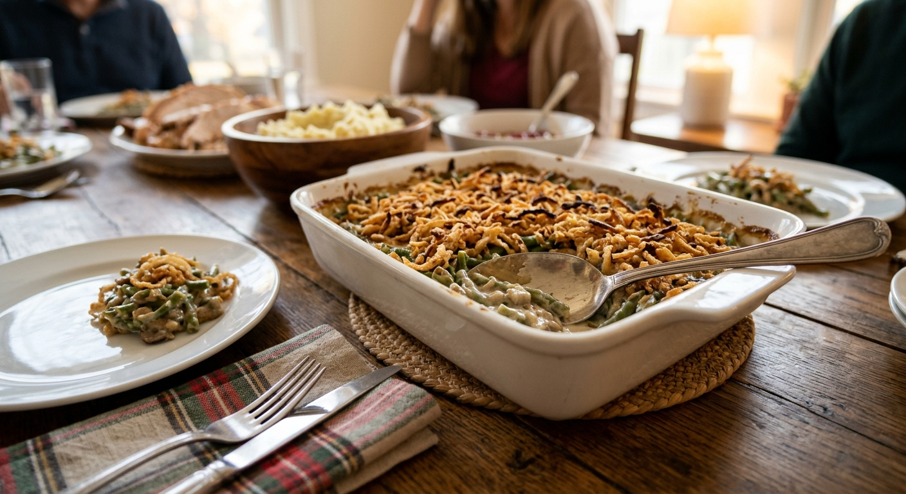

Green Bean Casserole

Green bean casserole is a Thanksgiving classic: tender green beans in a creamy mushroom sauce, topped with crunchy fried onions. This version uses fresh green beans and sautéed mushrooms for better flavor and texture, and still keeps the shortcut of condensed soup.
It can be assembled the day before, which makes it ideal for a busy holiday kitchen.
Ingredients
- 1 1/2 lb fresh green beans, trimmed and cut into 2-inch pieces
- 2 tbsp butter
- 8 oz cremini mushrooms, sliced
- 2 cloves garlic, minced
- 1 can (10.5 oz) condensed cream of mushroom soup
- 1/2 cup whole milk
- 1 tsp soy sauce
- 1/4 tsp black pepper
- 1 1/3 cups crispy fried onions, divided
Instructions
- Preheat the oven to 350°F (175°C). Boil the green beans in well-salted water for 4 to 5 minutes until bright green and just tender. Drain and rinse under cold water.
- Melt the butter in a large skillet over medium-high heat. Cook the mushrooms for 6 to 8 minutes until browned and their liquid has evaporated. Add the garlic and cook 1 minute.
- Stir in the soup, milk, soy sauce and pepper. Fold in the green beans and 2/3 cup of the fried onions.
- Transfer to a 2-quart baking dish. Bake for 25 minutes, until bubbling.
- Top with the remaining fried onions and bake 5 minutes more. Serve hot.
Ingredient Notes and Substitutions
Green beans
Fresh is best. Frozen cut green beans work without blanching, just thaw and pat dry. Canned are softer and need no cooking.
Soup
Cream of mushroom is classic. Cream of celery or cream of chicken also work.
Soy sauce
It adds a savory depth. Worcestershire sauce is a good substitute.
Tips for Success
- Cool the beans in cold water after blanching to keep them green.
- Let the mushrooms brown properly. That is where the flavor comes from.
- Hold back some fried onions for the top so they stay crisp.
Variations
- Add 1/2 cup shredded Gruyère or cheddar to the sauce.
- Top with toasted breadcrumbs mixed with butter.
- Use a homemade mushroom cream sauce in place of the canned soup.
Storage and Make-Ahead
Assemble the casserole without the topping up to a day ahead, cover and refrigerate, then bake for about 35 minutes and add the onions at the end. Leftovers keep in the refrigerator for 3 to 4 days.
Frequently Asked Questions
Can I make it ahead?
Yes. Assemble through the sauce step, refrigerate, and add the onion topping before baking.
Can I use frozen green beans?
Yes. Thaw and drain them first, and skip the blanching.
Can I make it without canned soup?
Yes, with a roux-based mushroom cream sauce, but the recipe here is written for condensed soup.
Why is my casserole watery?
Not cooking down the mushrooms, or not draining the beans well. Cook off the mushroom liquid and pat the beans dry.